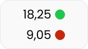
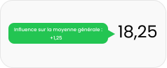

Tableaux de notes
Barre latérale
Personnalisation
Fermer
Tableaux de notes
Ajoute des fonctionnalité visuel et pratique à votre tableau de notes
Activer l’analyse du tableau de note
Permet le fonctionnement des focntionnalitées ci-dessous
Forcer l’affichage de la moyenne générale
Forcer l’affichage des moyennes par matières
Forcer l’affichage des moyennes par matières
Force l’affichage des moyennes par matières et les recalcules
Indicateurs colorés sur les moyennes par matières
Indique à l’aide de couleurs si les moyennes baisses ou augmentes la moyenne générale
 Aucun
Aucun

Ronds
 Fonds
Fonds
 Contours
Contours
Info-bulles indiquent l’influence des moyennes par matières
Info-bulles qui affiche combien de point cette moyenne fait perdre/gagner à la moyenne générale
Aucun
Valeur

Texte & Valeur
Barre latérale
Une nouvelle barre, de nouvelles fonctionnalités
Nouveau design pour la barre latérale
Donne une allure moderne à la barre permettant l’ajout d’options
Mode sombre pour la barre latérale
Rend les couleurs de fond de la barre latéral plus sombre, pour une meilleur lisibilité
Laisser la barre latérale ouverte en continue
Permet que la barre latérale ne ce minimise pas quand elle n’est plus survolé par la souris
Cacher le bouton de personnalisation
Si cette option est activé vous devez uiliser le bouton de la barre latérale pour accéder à ce menu
Style du bouton de personnalisation
Changer le style du bouton de personnalisation pour vous correspondre au mieux
Icon
 Icon & Texte
Icon & Texte
 Bordure
Bordure
Ile